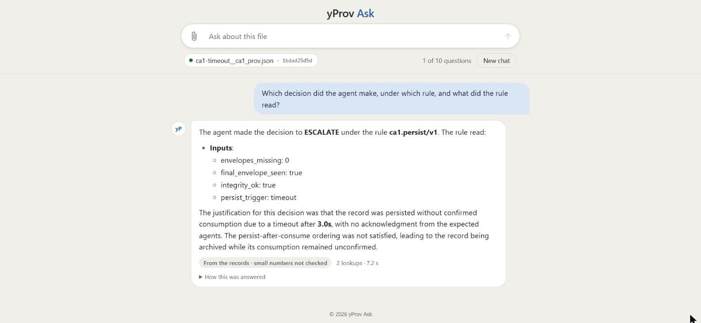

The problem
Provenance files record how a training run, a workflow or an agent decision came about, but they are large JSON graphs that few people can read. A chat interface helps only if its answers can be trusted, and for numbers that means more than a prompt asking the model to be careful.
How it works
An MCP server exposes deterministic query tools over an SQLite store of ingested PROV-JSON, and a LangGraph agent (gpt-4o-mini at temperature 0) can learn about a file only by calling them. Before an answer is returned, a grounding check written in code accepts it only when every figure in it was returned by a lookup, in the role it was returned for; otherwise the agent is sent back once to revise. Questions the records cannot answer are declined.

Every answer is written down as its own PROV record (the question, every tool call, the model call and the decision) with the rule inputs needed to replay the verdict. One server serves several clients: a dependency-free web component for the yProv Explorer, a web console, a terminal chat, and any MCP client over stdio or streamable HTTP.
Results
The repository ships question banks with gold answers, runners and scorers in eval/, and the server
runs as a non-root container with a health check. It reads the whole yProv family: training runs from yProv4ML,
decision records from yProv4Agents and workflow traces from yProv4WfS, openEO and Ophidia.
What I learned
Check facts in code, not in prompts
A model asked to be accurate still invents figures. A deterministic check against tool outputs turns accuracy into a rule.
Decline out of scope
Questions the records cannot answer are declined instead of answered from general knowledge.
One protocol, many clients
Building on MCP meant one server could serve a browser widget, a terminal and desktop agents without separate integrations.